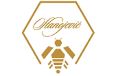
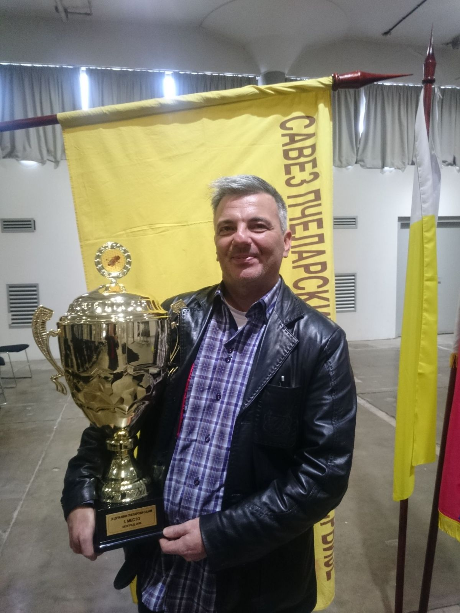

ApitoxCosmetics
Lepota iz košnice

ApiFigura
Antirid krema sa pčelinjim otrovom
0.000 RSD

ApiSalus
Pčelinje zdravlje
0.000 RSD

ProPolis
Krema na bazi propolisa
0.000 RSD

Korpa (0)Kozmetika ApitoxCosmetics, pčelinji proizvodi i nagrađeni Apitox sakupljač – iz porodičnog pčelarstva Gorana Stanojevića.
ProdavnicaNaša pričaAntirid krema sa pčelinjim otrovom
Pčelinje zdravlje
Krema na bazi propolisa

Uređaj za sakupljanje pčelinjeg otrova koji Goran razvija od 2013. godine – posrebrena žica, automatsko isključivanje, rad na baterije.